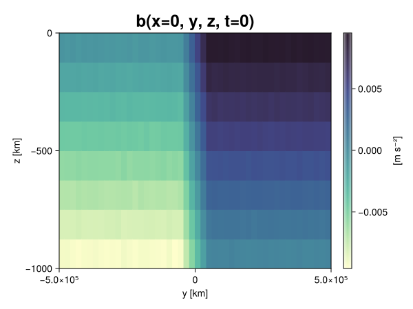
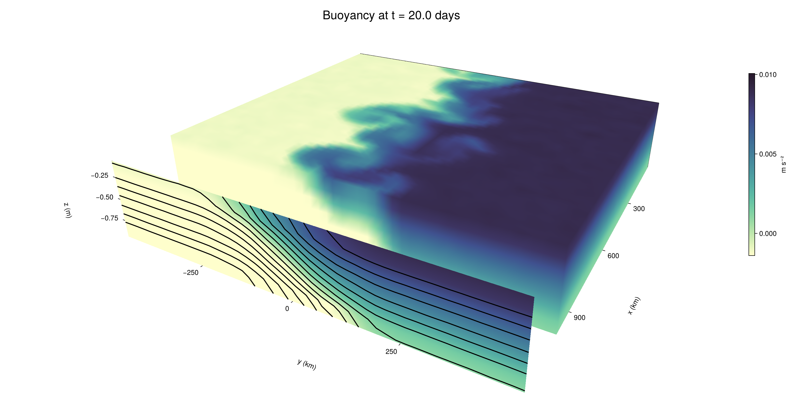

Baroclinic adjustment
In this example, we simulate the evolution and equilibration of a baroclinically unstable front.
Install dependencies
First let's make sure we have all required packages installed.
using Pkg
pkg"add Oceananigans, CairoMakie"using Oceananigans
using Oceananigans.UnitsGrid
We use a three-dimensional channel that is periodic in the x direction:
Lx = 1000kilometers # east-west extent [m]
Ly = 1000kilometers # north-south extent [m]
Lz = 1kilometers # depth [m]
grid = RectilinearGrid(size = (48, 48, 8),
x = (0, Lx),
y = (-Ly/2, Ly/2),
z = (-Lz, 0),
topology = (Periodic, Bounded, Bounded))48×48×8 RectilinearGrid{Float64, Periodic, Bounded, Bounded} on CPU with 3×3×3 halo
├── Periodic x ∈ [0.0, 1.0e6) regularly spaced with Δx=20833.3
├── Bounded y ∈ [-500000.0, 500000.0] regularly spaced with Δy=20833.3
└── Bounded z ∈ [-1000.0, 0.0] regularly spaced with Δz=125.0Model
We built a HydrostaticFreeSurfaceModel with an ImplicitFreeSurface solver. Regarding Coriolis, we use a beta-plane centered at 45° South.
model = HydrostaticFreeSurfaceModel(; grid,
coriolis = BetaPlane(latitude = -45),
buoyancy = BuoyancyTracer(),
tracers = :b,
momentum_advection = WENO(),
tracer_advection = WENO())HydrostaticFreeSurfaceModel{CPU, RectilinearGrid}(time = 0 seconds, iteration = 0)
├── grid: 48×48×8 RectilinearGrid{Float64, Periodic, Bounded, Bounded} on CPU with 3×3×3 halo
├── timestepper: QuasiAdamsBashforth2TimeStepper
├── tracers: b
├── closure: Nothing
├── buoyancy: BuoyancyTracer with ĝ = NegativeZDirection()
├── free surface: ImplicitFreeSurface with gravitational acceleration 9.80665 m s⁻²
│ └── solver: FFTImplicitFreeSurfaceSolver
├── advection scheme:
│ ├── momentum: WENO reconstruction order 5
│ └── b: WENO reconstruction order 5
└── coriolis: BetaPlane{Float64}We start our simulation from rest with a baroclinically unstable buoyancy distribution. We use ramp(y, Δy), defined below, to specify a front with width Δy and horizontal buoyancy gradient M². We impose the front on top of a vertical buoyancy gradient N² and a bit of noise.
"""
ramp(y, Δy)
Linear ramp from 0 to 1 between -Δy/2 and +Δy/2.
For example:
```
y < -Δy/2 => ramp = 0
-Δy/2 < y < -Δy/2 => ramp = y / Δy
y > Δy/2 => ramp = 1
```
"""
ramp(y, Δy) = min(max(0, y/Δy + 1/2), 1)
N² = 1e-5 # [s⁻²] buoyancy frequency / stratification
M² = 1e-7 # [s⁻²] horizontal buoyancy gradient
Δy = 100kilometers # width of the region of the front
Δb = Δy * M² # buoyancy jump associated with the front
ϵb = 1e-2 * Δb # noise amplitude
bᵢ(x, y, z) = N² * z + Δb * ramp(y, Δy) + ϵb * randn()
set!(model, b=bᵢ)Let's visualize the initial buoyancy distribution.
using CairoMakie
# Build coordinates with units of kilometers
x, y, z = 1e-3 .* nodes(grid, (Center(), Center(), Center()))
b = model.tracers.b
fig, ax, hm = heatmap(view(b, 1, :, :),
colormap = :deep,
axis = (xlabel = "y [km]",
ylabel = "z [km]",
title = "b(x=0, y, z, t=0)",
titlesize = 24))
Colorbar(fig[1, 2], hm, label = "[m s⁻²]")
fig
Simulation
Now let's build a Simulation.
simulation = Simulation(model, Δt=20minutes, stop_time=20days)Simulation of HydrostaticFreeSurfaceModel{CPU, RectilinearGrid}(time = 0 seconds, iteration = 0)
├── Next time step: 20 minutes
├── Elapsed wall time: 0 seconds
├── Wall time per iteration: NaN days
├── Stop time: 20 days
├── Stop iteration : Inf
├── Wall time limit: Inf
├── Callbacks: OrderedDict with 4 entries:
│ ├── stop_time_exceeded => Callback of stop_time_exceeded on IterationInterval(1)
│ ├── stop_iteration_exceeded => Callback of stop_iteration_exceeded on IterationInterval(1)
│ ├── wall_time_limit_exceeded => Callback of wall_time_limit_exceeded on IterationInterval(1)
│ └── nan_checker => Callback of NaNChecker for u on IterationInterval(100)
├── Output writers: OrderedDict with no entries
└── Diagnostics: OrderedDict with no entriesWe add a TimeStepWizard callback to adapt the simulation's time-step,
conjure_time_step_wizard!(simulation, IterationInterval(20), cfl=0.2, max_Δt=20minutes)Also, we add a callback to print a message about how the simulation is going,
using Printf
wall_clock = Ref(time_ns())
function print_progress(sim)
u, v, w = model.velocities
progress = 100 * (time(sim) / sim.stop_time)
elapsed = (time_ns() - wall_clock[]) / 1e9
@printf("[%05.2f%%] i: %d, t: %s, wall time: %s, max(u): (%6.3e, %6.3e, %6.3e) m/s, next Δt: %s\n",
progress, iteration(sim), prettytime(sim), prettytime(elapsed),
maximum(abs, u), maximum(abs, v), maximum(abs, w), prettytime(sim.Δt))
wall_clock[] = time_ns()
return nothing
end
add_callback!(simulation, print_progress, IterationInterval(100))Diagnostics/Output
Here, we save the buoyancy, $b$, at the edges of our domain as well as the zonal ($x$) average of buoyancy.
u, v, w = model.velocities
ζ = ∂x(v) - ∂y(u)
B = Average(b, dims=1)
U = Average(u, dims=1)
V = Average(v, dims=1)
filename = "baroclinic_adjustment"
save_fields_interval = 0.5day
slicers = (east = (grid.Nx, :, :),
north = (:, grid.Ny, :),
bottom = (:, :, 1),
top = (:, :, grid.Nz))
for side in keys(slicers)
indices = slicers[side]
simulation.output_writers[side] = JLD2OutputWriter(model, (; b, ζ);
filename = filename * "_$(side)_slice",
schedule = TimeInterval(save_fields_interval),
overwrite_existing = true,
indices)
end
simulation.output_writers[:zonal] = JLD2OutputWriter(model, (; b=B, u=U, v=V);
filename = filename * "_zonal_average",
schedule = TimeInterval(save_fields_interval),
overwrite_existing = true)JLD2OutputWriter scheduled on TimeInterval(12 hours):
├── filepath: baroclinic_adjustment_zonal_average.jld2
├── 3 outputs: (b, u, v)
├── array type: Array{Float64}
├── including: [:grid, :coriolis, :buoyancy, :closure]
├── file_splitting: NoFileSplitting
└── file size: 31.6 KiBNow we're ready to run.
@info "Running the simulation..."
run!(simulation)
@info "Simulation completed in " * prettytime(simulation.run_wall_time)[ Info: Running the simulation...
[ Info: Initializing simulation...
[00.00%] i: 0, t: 0 seconds, wall time: 29.718 seconds, max(u): (0.000e+00, 0.000e+00, 0.000e+00) m/s, next Δt: 20 minutes
[ Info: ... simulation initialization complete (27.557 seconds)
[ Info: Executing initial time step...
[ Info: ... initial time step complete (17.563 seconds).
[06.94%] i: 100, t: 1.389 days, wall time: 35.960 seconds, max(u): (1.261e-01, 1.192e-01, 1.566e-03) m/s, next Δt: 20 minutes
[13.89%] i: 200, t: 2.778 days, wall time: 915.130 ms, max(u): (2.150e-01, 1.835e-01, 1.713e-03) m/s, next Δt: 20 minutes
[20.83%] i: 300, t: 4.167 days, wall time: 893.463 ms, max(u): (2.902e-01, 2.522e-01, 1.749e-03) m/s, next Δt: 20 minutes
[27.78%] i: 400, t: 5.556 days, wall time: 901.487 ms, max(u): (3.544e-01, 3.257e-01, 1.742e-03) m/s, next Δt: 20 minutes
[34.72%] i: 500, t: 6.944 days, wall time: 839.504 ms, max(u): (4.425e-01, 4.360e-01, 1.855e-03) m/s, next Δt: 20 minutes
[41.67%] i: 600, t: 8.333 days, wall time: 902.201 ms, max(u): (5.590e-01, 6.430e-01, 2.233e-03) m/s, next Δt: 20 minutes
[48.61%] i: 700, t: 9.722 days, wall time: 1.004 seconds, max(u): (8.685e-01, 9.979e-01, 3.104e-03) m/s, next Δt: 20 minutes
[55.56%] i: 800, t: 11.111 days, wall time: 900.662 ms, max(u): (1.293e+00, 1.143e+00, 3.991e-03) m/s, next Δt: 20 minutes
[62.50%] i: 900, t: 12.500 days, wall time: 780.103 ms, max(u): (1.392e+00, 1.179e+00, 4.545e-03) m/s, next Δt: 20 minutes
[69.44%] i: 1000, t: 13.889 days, wall time: 914.924 ms, max(u): (1.421e+00, 1.181e+00, 4.660e-03) m/s, next Δt: 20 minutes
[76.39%] i: 1100, t: 15.278 days, wall time: 896.572 ms, max(u): (1.347e+00, 1.236e+00, 2.628e-03) m/s, next Δt: 20 minutes
[83.33%] i: 1200, t: 16.667 days, wall time: 839.500 ms, max(u): (1.262e+00, 1.051e+00, 2.425e-03) m/s, next Δt: 20 minutes
[90.28%] i: 1300, t: 18.056 days, wall time: 924.332 ms, max(u): (1.279e+00, 1.118e+00, 2.017e-03) m/s, next Δt: 20 minutes
[97.22%] i: 1400, t: 19.444 days, wall time: 867.149 ms, max(u): (1.231e+00, 1.100e+00, 2.562e-03) m/s, next Δt: 20 minutes
[ Info: Simulation is stopping after running for 1.014 minutes.
[ Info: Simulation time 20 days equals or exceeds stop time 20 days.
[ Info: Simulation completed in 1.015 minutes
Visualization
All that's left is to make a pretty movie. Actually, we make two visualizations here. First, we illustrate how to make a 3D visualization with Makie's Axis3 and Makie.surface. Then we make a movie in 2D. We use CairoMakie in this example, but note that using GLMakie is more convenient on a system with OpenGL, as figures will be displayed on the screen.
using CairoMakieThree-dimensional visualization
We load the saved buoyancy output on the top, north, and east surface as FieldTimeSerieses.
filename = "baroclinic_adjustment"
sides = keys(slicers)
slice_filenames = NamedTuple(side => filename * "_$(side)_slice.jld2" for side in sides)
b_timeserieses = (east = FieldTimeSeries(slice_filenames.east, "b"),
north = FieldTimeSeries(slice_filenames.north, "b"),
top = FieldTimeSeries(slice_filenames.top, "b"))
B_timeseries = FieldTimeSeries(filename * "_zonal_average.jld2", "b")
times = B_timeseries.times
grid = B_timeseries.grid48×48×8 RectilinearGrid{Float64, Periodic, Bounded, Bounded} on CPU with 3×3×3 halo
├── Periodic x ∈ [0.0, 1.0e6) regularly spaced with Δx=20833.3
├── Bounded y ∈ [-500000.0, 500000.0] regularly spaced with Δy=20833.3
└── Bounded z ∈ [-1000.0, 0.0] regularly spaced with Δz=125.0We build the coordinates. We rescale horizontal coordinates to kilometers.
xb, yb, zb = nodes(b_timeserieses.east)
xb = xb ./ 1e3 # convert m -> km
yb = yb ./ 1e3 # convert m -> km
Nx, Ny, Nz = size(grid)
x_xz = repeat(x, 1, Nz)
y_xz_north = y[end] * ones(Nx, Nz)
z_xz = repeat(reshape(z, 1, Nz), Nx, 1)
x_yz_east = x[end] * ones(Ny, Nz)
y_yz = repeat(y, 1, Nz)
z_yz = repeat(reshape(z, 1, Nz), grid.Ny, 1)
x_xy = x
y_xy = y
z_xy_top = z[end] * ones(grid.Nx, grid.Ny)Then we create a 3D axis. We use zonal_slice_displacement to control where the plot of the instantaneous zonal average flow is located.
fig = Figure(size = (1600, 800))
zonal_slice_displacement = 1.2
ax = Axis3(fig[2, 1],
aspect=(1, 1, 1/5),
xlabel = "x (km)",
ylabel = "y (km)",
zlabel = "z (m)",
xlabeloffset = 100,
ylabeloffset = 100,
zlabeloffset = 100,
limits = ((x[1], zonal_slice_displacement * x[end]), (y[1], y[end]), (z[1], z[end])),
elevation = 0.45,
azimuth = 6.8,
xspinesvisible = false,
zgridvisible = false,
protrusions = 40,
perspectiveness = 0.7)Axis3()We use data from the final savepoint for the 3D plot. Note that this plot can easily be animated by using Makie's Observable. To dive into Observables, check out Makie.jl's Documentation.
n = length(times)41Now let's make a 3D plot of the buoyancy and in front of it we'll use the zonally-averaged output to plot the instantaneous zonal-average of the buoyancy.
b_slices = (east = interior(b_timeserieses.east[n], 1, :, :),
north = interior(b_timeserieses.north[n], :, 1, :),
top = interior(b_timeserieses.top[n], :, :, 1))
# Zonally-averaged buoyancy
B = interior(B_timeseries[n], 1, :, :)
clims = 1.1 .* extrema(b_timeserieses.top[n][:])
kwargs = (colorrange=clims, colormap=:deep, shading=NoShading)
surface!(ax, x_yz_east, y_yz, z_yz; color = b_slices.east, kwargs...)
surface!(ax, x_xz, y_xz_north, z_xz; color = b_slices.north, kwargs...)
surface!(ax, x_xy, y_xy, z_xy_top; color = b_slices.top, kwargs...)
sf = surface!(ax, zonal_slice_displacement .* x_yz_east, y_yz, z_yz; color = B, kwargs...)
contour!(ax, y, z, B; transformation = (:yz, zonal_slice_displacement * x[end]),
levels = 15, linewidth = 2, color = :black)
Colorbar(fig[2, 2], sf, label = "m s⁻²", height = Relative(0.4), tellheight=false)
title = "Buoyancy at t = " * string(round(times[n] / day, digits=1)) * " days"
fig[1, 1:2] = Label(fig, title; fontsize = 24, tellwidth = false, padding = (0, 0, -120, 0))
rowgap!(fig.layout, 1, Relative(-0.2))
colgap!(fig.layout, 1, Relative(-0.1))
save("baroclinic_adjustment_3d.png", fig)
Two-dimensional movie
We make a 2D movie that shows buoyancy $b$ and vertical vorticity $ζ$ at the surface, as well as the zonally-averaged zonal and meridional velocities $U$ and $V$ in the $(y, z)$ plane. First we load the FieldTimeSeries and extract the additional coordinates we'll need for plotting
ζ_timeseries = FieldTimeSeries(slice_filenames.top, "ζ")
U_timeseries = FieldTimeSeries(filename * "_zonal_average.jld2", "u")
B_timeseries = FieldTimeSeries(filename * "_zonal_average.jld2", "b")
V_timeseries = FieldTimeSeries(filename * "_zonal_average.jld2", "v")
xζ, yζ, zζ = nodes(ζ_timeseries)
yv = ynodes(V_timeseries)
xζ = xζ ./ 1e3 # convert m -> km
yζ = yζ ./ 1e3 # convert m -> km
yv = yv ./ 1e3 # convert m -> km49-element Vector{Float64}:
-500.0
-479.1666666666667
-458.3333333333333
-437.5
-416.6666666666667
-395.8333333333333
-375.0
-354.1666666666667
-333.3333333333333
-312.5
-291.6666666666667
-270.8333333333333
-250.0
-229.16666666666666
-208.33333333333334
-187.5
-166.66666666666666
-145.83333333333334
-125.0
-104.16666666666667
-83.33333333333333
-62.5
-41.666666666666664
-20.833333333333332
0.0
20.833333333333332
41.666666666666664
62.5
83.33333333333333
104.16666666666667
125.0
145.83333333333334
166.66666666666666
187.5
208.33333333333334
229.16666666666666
250.0
270.8333333333333
291.6666666666667
312.5
333.3333333333333
354.1666666666667
375.0
395.8333333333333
416.6666666666667
437.5
458.3333333333333
479.1666666666667
500.0Next, we set up a plot with 4 panels. The top panels are large and square, while the bottom panels get a reduced aspect ratio through rowsize!.
set_theme!(Theme(fontsize=24))
fig = Figure(size=(1800, 1000))
axb = Axis(fig[1, 2], xlabel="x (km)", ylabel="y (km)", aspect=1)
axζ = Axis(fig[1, 3], xlabel="x (km)", ylabel="y (km)", aspect=1, yaxisposition=:right)
axu = Axis(fig[2, 2], xlabel="y (km)", ylabel="z (m)")
axv = Axis(fig[2, 3], xlabel="y (km)", ylabel="z (m)", yaxisposition=:right)
rowsize!(fig.layout, 2, Relative(0.3))To prepare a plot for animation, we index the timeseries with an Observable,
n = Observable(1)
b_top = @lift interior(b_timeserieses.top[$n], :, :, 1)
ζ_top = @lift interior(ζ_timeseries[$n], :, :, 1)
U = @lift interior(U_timeseries[$n], 1, :, :)
V = @lift interior(V_timeseries[$n], 1, :, :)
B = @lift interior(B_timeseries[$n], 1, :, :)Observable([-0.00938165790413704 -0.008118945789749659 -0.006871272344353214 -0.005627429250756793 -0.004359185930021089 -0.0031139446130211026 -0.0018863160469811309 -0.0006114519816644064; -0.009379509510849779 -0.008131939459744816 -0.006891923184259276 -0.005632011711207555 -0.004385312208180074 -0.003133536725758334 -0.001881938405784854 -0.000621624014218953; -0.009386649088665449 -0.008132773575374242 -0.006891155312530058 -0.005614994106433231 -0.004355280873676132 -0.0031364575433944467 -0.0018681680221924197 -0.0006135889081787433; -0.009384206320785023 -0.008113044575756775 -0.006861381828940617 -0.005631819307809988 -0.004393719879483022 -0.003121794738366391 -0.0018504085306952488 -0.0006228366257962767; -0.009385317823382061 -0.008116164315792913 -0.006853968052118566 -0.005619573605266663 -0.0043863401358785305 -0.003135112039307468 -0.0018526076289656426 -0.0006167906186238896; -0.009359121184846999 -0.00811876410629734 -0.0068743867932619315 -0.005630110028182357 -0.004377394529788139 -0.0031421729409163222 -0.0018801697794784706 -0.0006203342669289968; -0.009400676245685002 -0.008126579886986824 -0.0068722670531445665 -0.005650189180139836 -0.004368141574801053 -0.003147212791726785 -0.0018575841538124676 -0.0005980475823908847; -0.009358595338474407 -0.008137654773778332 -0.00687013626081974 -0.0056326002678841955 -0.004399488952845401 -0.003142182132201485 -0.0018816764746233065 -0.0006187025889142387; -0.009343317806101184 -0.00813613007657958 -0.0068814526883681434 -0.005611086211697685 -0.004373082926447398 -0.0031183295932083084 -0.0018713119376137137 -0.000636603466022449; -0.009380315067146467 -0.008143895200572045 -0.0068736436936158605 -0.005624090198411546 -0.004387982464983872 -0.0031299354931023124 -0.0018726830117757464 -0.0006323254439811851; -0.009381457821604653 -0.00809878539311766 -0.0068826824923958795 -0.00563220252150734 -0.004356763316686837 -0.0031347919912289197 -0.0018919670673135578 -0.0006400351347856287; -0.009372302542881577 -0.008141843662031434 -0.006869805031891436 -0.005623842960158955 -0.0043940472164133325 -0.003140900861778152 -0.00187928335779649 -0.0006226221532508082; -0.009384977961769384 -0.008121275839546964 -0.006849414321792711 -0.005633949668811784 -0.004368601341202707 -0.0031065384439239 -0.0018915276056398324 -0.0006264526835123436; -0.009369266787740305 -0.008142648392439706 -0.006854316248123153 -0.005636183037104072 -0.004373625380815067 -0.003137952016238128 -0.0018492021180388906 -0.0006225379689650843; -0.009369450800113907 -0.00814676724661583 -0.0068768731077524445 -0.005626178102778653 -0.004375546347728955 -0.003141508489450761 -0.001862253197769988 -0.0006457821617485605; -0.009367376238698613 -0.008123211482123088 -0.006866846535231067 -0.005596899564822503 -0.0043586521659140535 -0.003144778532825324 -0.0018861186238536105 -0.0006225581851840441; -0.009365566023642377 -0.00811937254950309 -0.006906544084526757 -0.005629320216066699 -0.004402936331595195 -0.0031601115547633114 -0.0018980289220858271 -0.0006314170369368012; -0.009374699107915769 -0.008148005542378258 -0.006883625560863828 -0.005614422002320228 -0.004356528691161759 -0.0031284146044197555 -0.001885095857732436 -0.0006115901510126802; -0.009378175850273633 -0.008132787062173602 -0.0068701099352892515 -0.005615157416734147 -0.0043862710129316355 -0.003121376881532858 -0.0019001424849317626 -0.0006053698261485092; -0.009389957931859249 -0.008141849693120148 -0.006880600869079317 -0.0056214485910934435 -0.004410213154667962 -0.0031371302529246896 -0.001853059938564696 -0.0006090250944827458; -0.00939029157998183 -0.008132718658103348 -0.0068782411664009445 -0.005644589303589319 -0.004372289331916332 -0.003130136596424546 -0.0018520641433010332 -0.0006211948772317342; -0.009375175384278797 -0.00813321155642592 -0.006874361281485486 -0.0056439864613567385 -0.0043787092577615904 -0.0031192384638852916 -0.0018809217567183917 -0.0006103867586600941; -0.00747489138381341 -0.006261665284117385 -0.0049679289701867295 -0.0037664918013751414 -0.002473460466398189 -0.0012586208754827822 1.2356074107535275e-5 0.0012560421303551936; -0.005399472673087102 -0.004172061954608946 -0.0029145264680739886 -0.0016741414894724394 -0.00042021906488313234 0.0008320699588084133 0.002084093943320628 0.0033382108212635926; -0.003346211319403245 -0.0020944437251030883 -0.0008281319238273409 0.0004237596573049918 0.001677255926035441 0.002911647431265553 0.004166390737687 0.0054132218444882104; -0.001275998822719284 1.1783413379854351e-5 0.0012469559535185453 0.0024786738849283496 0.0037445163157330103 0.004998169616562862 0.006260378159146874 0.007511432459430807; 0.0006443523219370685 0.0018829758772947612 0.003131088728295931 0.004385260434317572 0.005628256874148627 0.006851371666807261 0.008104825815202487 0.00937055375004026; 0.0006291661229641221 0.0018750629170066653 0.003126972980277982 0.004384180403537295 0.005654254195886524 0.0068893908148186 0.00812508799426172 0.009374249771113312; 0.0006204913185320309 0.0018809282214974597 0.003098988981145035 0.004387057187339315 0.005614784164922434 0.006865746778388806 0.008110446515536216 0.009371574328242876; 0.0006213346157972276 0.001866736515319668 0.0031071335424784977 0.0043590389637355965 0.005642941175648936 0.006872621761786564 0.008141949423353946 0.00937477975738967; 0.0006527781760272485 0.00188467462541253 0.00314521915720471 0.004377315373286765 0.0056361426828116 0.006869830738550853 0.008136333762503466 0.009371140576583982; 0.0006259277777303887 0.0018726039324346447 0.0031195143720180382 0.0043540381199735495 0.005642362112860577 0.006850021396131678 0.00812223376885904 0.009377635304834582; 0.0006334499217532951 0.0018779011392154063 0.0031310583142840722 0.004381177367120501 0.0056006977171306266 0.006848172625483299 0.008127733477178224 0.009381542842469408; 0.000645131123109883 0.0018969478281102958 0.0031182418037520466 0.004343952334784142 0.0056477285140717004 0.006877567181838874 0.00813653544886469 0.00938483157467447; 0.0006224777367109881 0.001903231415672452 0.0031016412915078613 0.004375501226209445 0.005622933296596283 0.0068671059443362326 0.008114886348110544 0.009366462533232813; 0.0006399421541794557 0.0019042860105469267 0.003109815898094301 0.004375126823637277 0.005628470729523923 0.006905271785744477 0.008134655844905596 0.009358102351605392; 0.0006145957226378489 0.0018778338778447968 0.0031496521608272055 0.004371485643078537 0.005625086390262335 0.0068517222564210105 0.008124108098176994 0.009389541694260864; 0.0006344081642179187 0.0018706429929290014 0.003115637493167999 0.0043690863766177495 0.005628124252888574 0.006890732243148169 0.00810780757326175 0.009402763618871811; 0.0006190879941541976 0.0018802733770706531 0.0031158642441530076 0.004408625488321768 0.005638980150068769 0.006846923912798667 0.008112059141421485 0.009386302201584392; 0.0006303532314917321 0.0018883633095752757 0.003111589319651493 0.004389002315898852 0.005629989447034221 0.00688328552024766 0.008113473308695683 0.009394899283677175; 0.0006220589913166428 0.0018632800185235242 0.003136471342525271 0.0043499823715416885 0.005634974537890518 0.006870465079406422 0.00812350391704787 0.009372320259518558; 0.0006229234724500961 0.0018758532749717644 0.0031338321488662154 0.004369802181446708 0.005615938278828469 0.006878172684015617 0.008127989564717818 0.009377471302767523; 0.0006230234531689272 0.0018764789658720037 0.003159108500765225 0.004374661879249826 0.005621909463445575 0.006885104423614015 0.008121055020226838 0.009378954998852882; 0.0006036239127152833 0.0018955386893359518 0.00312244578386797 0.004371616408829587 0.005627217768753076 0.006883080943809458 0.008133449400326847 0.009383598866347915; 0.0006416023833982462 0.001877842136338023 0.0031520932513282294 0.004372632379619701 0.005625607746170683 0.006871683979379181 0.008116780657539178 0.009380621917095768; 0.0006027662709758852 0.0018678757212284615 0.003118049271573003 0.004390859990106504 0.005611735929979902 0.006861865432052493 0.008125035545601664 0.009377236835303155; 0.0006325528006727307 0.001856074884508501 0.003142870051629139 0.004353169965008029 0.005625649848854446 0.006891029209887636 0.008095525148951272 0.009402333533922107; 0.0006383461501563518 0.0018710626404809807 0.0031532787585714303 0.004374511951138632 0.005640200358294931 0.006865828265298298 0.008128517724043398 0.009374586841479432])
and then build our plot:
hm = heatmap!(axb, xb, yb, b_top, colorrange=(0, Δb), colormap=:thermal)
Colorbar(fig[1, 1], hm, flipaxis=false, label="Surface b(x, y) (m s⁻²)")
hm = heatmap!(axζ, xζ, yζ, ζ_top, colorrange=(-5e-5, 5e-5), colormap=:balance)
Colorbar(fig[1, 4], hm, label="Surface ζ(x, y) (s⁻¹)")
hm = heatmap!(axu, yb, zb, U; colorrange=(-5e-1, 5e-1), colormap=:balance)
Colorbar(fig[2, 1], hm, flipaxis=false, label="Zonally-averaged U(y, z) (m s⁻¹)")
contour!(axu, yb, zb, B; levels=15, color=:black)
hm = heatmap!(axv, yv, zb, V; colorrange=(-1e-1, 1e-1), colormap=:balance)
Colorbar(fig[2, 4], hm, label="Zonally-averaged V(y, z) (m s⁻¹)")
contour!(axv, yb, zb, B; levels=15, color=:black)Finally, we're ready to record the movie.
frames = 1:length(times)
record(fig, filename * ".mp4", frames, framerate=8) do i
n[] = i
endThis page was generated using Literate.jl.